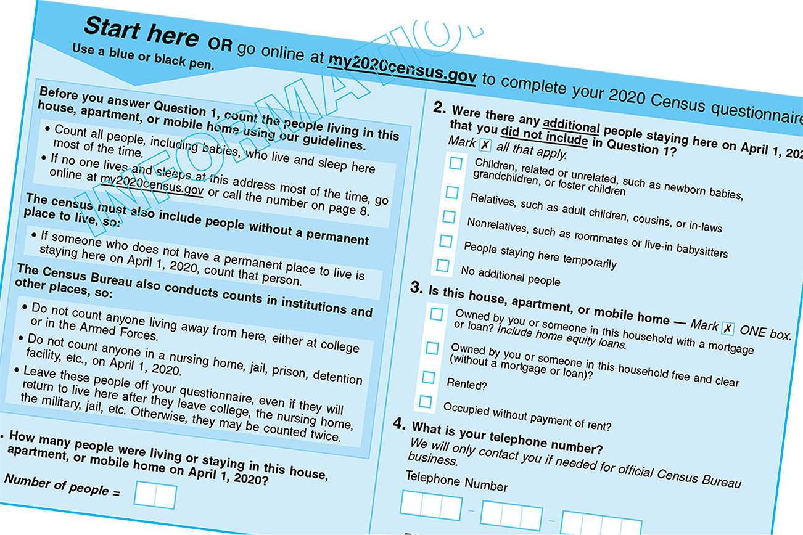

Introductions,
Overview of statistics, &
Producing data: surveys and sampling
SOC 221 • Lecture 1
Victoria Sass
Monday, June 23, 2025
Introductions
Welcome to SOC/STAT/CSSS 221!
Plan for today:
- Introductions
- Syllabus & course overview
- Overview of statistics
- Producing data: surveys and sampling
Who are you??
Hi! 👋🏻 I’m Vic!
- I’m the instructor for this course and a PhD Candidate in the Sociology department
- I employ statistical methods in my own research on health disparities and the relationship between mental and physical health outcomes
- I use any/all pronouns
- I parent a very sweet & silly pitbull named Margo (aka Marigold)


Who are you??
Hi! 👋🏻 I’m Vic!
- I’m the instructor for this course and a PhD Candidate in the Sociology department
- I employ statistical methods in my own research on health disparities and the relationship between mental and physical health outcomes
- I use any/all pronouns
- I also step-parent an easy-going but goofy golden retriever
named Lemon (aka Clementine)


Who are you??
Get in pairs! 👩🏼🤝👨🏽 👩🏿🤝👩🏽 👨🏾🤝👨🏻
- Name
- Major/interest if undecided
- Pronouns
- One-word description of how you feel about taking this class
- Favorite summer activity/food/memory
Syllabus
Any questions?
Overview of statistics
Some things we know about this class
- Not a class that most students look forward to
- Students sometimes have a lot of anxiety about the course
- Anxiety is often rooted in apprehension about math
Good news!
Statistics is NOT math…
…but it looks a lot like math 😑
We try to make the math easy
so we can focus on the concepts,
interpretation, and implications!
Social
statistics
are tools that
allow us to
quantify
observations
(data) about
the world
| What is the relative number of red, blue, green, and yellow M&Ms in a bag? | |
| What is the probability of pulling 2 red M&Ms in a row out of a bag of 100 M&Ms? | |
| Are there gender differences in preference for red M&Ms? |
| What percentage of people have access to health insurance through work? | |
| How did access to health care affect levels of stress during the coronavirus pandemic? | |
| What percentage of Americans approved of Biden’s handling of the vaccine rollout? |
Statistics are tools that allow us to quantify observations about the world
Statistics are tools that allow us to quantify observations about the world
Statistics are tools that allow us to quantify observations about the world
Break!
Producing data:
surveys and sampling
What are data/where do they come from?
- Data = information, often in large quantities
- Characteristics of 47,000+ students at UW-Seattle
- Conditions in 65,000 neighborhoods in the U.S.
- Attributes of 128,580,000 households in the U.S.
- From any source we choose
- Newspapers, books, internet
- Court filings, public records
- Cell phone call records, twitter, Reddit
- Much social data comes from SURVEYS…
Surveys
Survey
A tool used to ask
people question(s)
in order to gather
information about
what the subject
does, feels,
or thinks.

Examples of survey questions
In what year were you born?
(enter a 4-digit number; i.e. 2005)_________
- With which gender do you most identify?
☐ Female
☐ Male
☐ Non-binary
☐ Other
- Are you of Hispanic, Latino, or of Spanish origin?
☐ Yes ☐ No
- How would you describe your race?
(select all that apply)
☐ American Indian or Alask Native
☐ Asian
☐ Black or African American
☐ Native Hawaiian and/or Pacific Islander
☐ White or Caucasian
☐ Middle Eastern or North African
What do we do with the results of a survey?
What do we do with the results of a survey?
Turn them into DATA…
Survey DATA
A survey will produce a dataset for analyses
| Person # | birth_year | gender | ethnicity | race |
|---|---|---|---|---|
| 1 | 1992 | 1 | 1 | 5 |
| 2 | 1993 | 2 | 0 | 5 |
| 3 | 1995 | 2 | 0 | 2 |
| 4 | 1980 | 2 | 0 | 3 |
| 5 | 1991 | 1 | 1 | 5 |
| 6 | 1975 | 4 | 1 | 1 |
| 7 | 1960 | 1 | 0 | 6 |
| 8 | 1952 | 1 | 0 | 5 |
| 9 | 2000 | 3 | 0 | 3 |
| 10 | 1990 | 1 | 1 | 2 |
| 11 | 1993 | 2 | 1 | 4 |
| 12 | 1992 | 3 | 0 | 4 |
Each row in the dataset contains information on one data unit (i.e. individual or case)
Units are the objects described by a set of data. May be people, animals, businesses, events, etc. – whatever you collect data about.
People that you survey become units, cases, or individuals in a data set.
Survey DATA
A survey will produce a dataset for analyses
| Person # | birth_year | gender | ethnicity | race |
|---|---|---|---|---|
| 1 | 1992 | 1 | 1 | 5 |
| 2 | 1993 | 2 | 0 | 5 |
| 3 | 1995 | 2 | 0 | 2 |
| 4 | 1980 | 2 | 0 | 3 |
| 5 | 1991 | 1 | 1 | 5 |
| 6 | 1975 | 4 | 1 | 1 |
| 7 | 1960 | 1 | 0 | 6 |
| 8 | 1952 | 1 | 0 | 5 |
| 9 | 2000 | 3 | 0 | 3 |
| 10 | 1990 | 1 | 1 | 2 |
| 11 | 1993 | 2 | 1 | 4 |
| 12 | 1992 | 3 | 0 | 4 |
Each column in the dataset contains data for one variable
Questions in the survey become variables.
A variable is a characteristic of units (cases or observations) that can take on different values or attributes.
Antonym to “variable” is a CONSTANT (same value for all cases)
Survey DATA
A survey will produce a dataset for analyses
| Person # | birth_year | gender | ethnicity | race |
|---|---|---|---|---|
| 1 | 1992 | 1 | 1 | 5 |
| 2 | 1993 | 2 | 0 | 5 |
| 3 | 1995 | 2 | 0 | 2 |
| 4 | 1980 | 2 | 0 | 3 |
| 5 | 1991 | 1 | 1 | 5 |
| 6 | 1975 | 4 | 1 | 1 |
| 7 | 1960 | 1 | 0 | 6 |
| 8 | 1952 | 1 | 0 | 5 |
| 9 | 2000 | 3 | 0 | 3 |
| 10 | 1990 | 1 | 1 | 2 |
| 11 | 1993 | 2 | 1 | 4 |
| 12 | 1992 | 3 | 0 | 4 |
Each cell in the dataset refers to the value on a particular variable for a particular case/unit
A value is a number, word, or symbol that represents a characteristic of a particular case on a particular variable.
Levels of Measurement
The level of measurement of a variable refers to the type of information represented in the VALUES of that variable.
This includes:
- The level of DETAIL conveyed by the potential values
- The extent to which the values refer to QUANTIFIABLE differences between cases with different values
Usually determined by:
- The nature of the characteristic we are trying to measure.
- How we ask the question.
Levels of Measurement
The level of measurement of a variable refers to the type of information represented in the VALUES of that variable.
Nominal
Ordinal
Interval

Ratio

Qualitative versus Quantitative
Qualitative versus Quantitative

Qualitative measurements
Binary variables are a sub-type of nominal variables.
Qualitative versus Quantitative
Qualitative versus Quantitative

Quantitative measurements
Question to ask yourself
Can the values of this variable
be broken up into sub-units?
Levels of Measurement
The level of measurement of a variable refers to the type of information represented in the VALUES of that variable.
This includes:
- The level of DETAIL conveyed by the potential values
- The extent to which the values refer to QUANTIFIABLE differences between cases with different values
Usually determined by:
- The nature of the characteristic we are trying to measure.
- How we ask the question.
How many hours did you spend studying yesterday
(in hours)?
______________
How much did you study yesterday?
☐ a lot
☐ a moderate amount
☐ a little
☐ none
Survey DATA
A survey will produce a dataset for analyses
| Person # | birth_year | gender | ethnicity | race |
|---|---|---|---|---|
| 1 | 1992 | 1 | 1 | 5 |
| 2 | 1993 | 2 | 0 | 5 |
| 3 | 1995 | 2 | 0 | 2 |
| 4 | 1980 | 2 | 0 | 3 |
| 5 | 1991 | 1 | 1 | 5 |
| 6 | 1975 | 4 | 1 | 1 |
| 7 | 1960 | 1 | 0 | 6 |
| 8 | 1952 | 1 | 0 | 5 |
| 9 | 2000 | 3 | 0 | 3 |
| 10 | 1990 | 1 | 1 | 2 |
| 11 | 1993 | 2 | 1 | 4 |
| 12 | 1992 | 3 | 0 | 4 |
Using statistics we can analyze these (and other) data to try to answer interesting questions about the real world.
Example: Use survey results to examine attitudes about climate change among American adults.
Bias
We have to be careful about how we use statistics to analyze and interpret data.
- A few of the many ways that surveys can provide biased data and/or lead to faulty conclusions:
- Ineffective sampling
- Nonresponse
- Response bias
Example: Any of the problems above could lead to misleading conclusions regarding attitudes about climate change.
Bias
A systematic
data flaw
that leads us to
mischaracterize
reality.
Population versus Sample
Population
The entire group of people
(or other units) that we
want to know about.
Example: Want to know attitudes about climate change among American adults.
Question: What is the population of interest?
Answer: American adults.
Unfortunately, we rarely have the time, energy, or money to study the entire population of interest!
So we collect information about the sample instead…
Population versus Sample
Sample
The smaller subset of the population
that you actually study/examine.
% of people in our SAMPLE who believe climate change is an urgent problem.
—Inference—>
% of American adults who believe climate change is an urgent problem
Sample statistics
The characteristic of the sample
that we actually observe.
Population parameter
The characteristic of the population
that we are interested in knowing.
Inference
% of people in our SAMPLE who believe climate change is an urgent problem.
—Inference—>
% of American adults who believe climate change is an urgent problem
This only works if our sample resembles the population of interest on important characteristics
In survey sampling, bias would be the tendency of a sample statistic to systematically over- or under-estimate a population parameter
How do we make sure that our sample represents our population of interest?
i.e., the characteristics of the sample are similar in important ways to the population of interest.
Sampling
Probability sampling 🎲
Any sampling approach in which each member in the
population has an equal, or known, probability of being selected
into the sample.
Non-probability sampling 🙅 🎲
Any sampling approach in which the probability of cases being
drawn into the sample varies or is unknown.
Simple random sampling
Systematic sampling
Stratified sampling
Cluster sampling
Convenience sampling
Quota sampling
Network sampling
Voluntary sampling
🎲 Simple random sampling
Advantages:
✔ It provides a simple and fair way of selecting the sample
✔ It’s based on randomness so it maximizes the chance of an unbiased / representative sample
Limitations:
✖️ Hard to do because a complete list of the population is usually not available
✖️ Can be very expensive and time consuming
🎲 Systematic sampling
Advantage:
✔ Sometimes it is easier to apply than simple random sampling
Limitation:
✖️ Any patterns present in the population may bias the sample
🎲 Stratified sampling
Advantages:
✔ It is very useful when we want to make sure that minority groups are represented in the sample
✔ Can calculate the probability of an individual case being included
Limitations:
✖ Creating stratified lists of individuals may be expensive
✖ Sometimes the population cannot be divided into different strata
🎲 Cluster sampling
Advantage:
✔ Cheaper and more efficient for geographically dispersed populations
Limitation:
✖️The sample will be biased if the clusters do not represent the population
🙅 🎲 Convenience sampling
Advantage:
✔ Cheap, time-saving, and simple to implement
Limitation:
✖️ Often leads to selection bias and thus study results aren’t generalizable
🙅 🎲 Quota sampling

Advantages:
✔ Cheaper, faster, and easier to implement than stratified sampling
✔ More representative than other non-probability methods
Limitations:
✖ Miss people who are not in that particular area at that particular time
✖ Since it’s not based on random selection, selection bias is still possible and therefore representativeness is not guaranteed
🙅 🎲 Network sampling
also known as
SNOWBALL SAMPLING
Advantage:
✔ Useful when individuals in the population are difficult to identify (e.g. drug users, un-housed folks)
Limitations:
✖️ Selection bias is likely since respondents are more similar to each other than randomly drawn individuals
✖️ Can be slow since it relies on respondents’ referrals
🙅 🎲 Voluntary sampling
Advantage:
✔ Similar to convenience sampling, it’s cheap, time-saving, and simple to implement
Limitation:
✖️ People with strong opinions are more likely to respond to your survey
Others sources of bias
Even with a representative sample there are additional sources of bias to be aware of
Non-response
- Survey non-response –> individuals refuse to take the survey
- Item non-response –> individuals refuse to answer specific questions on the survey
BIAS
This is a problem because those refusing to answer might differ from those who do answer. Therefore, the information from the sample does not reflect the reality of the population.
Example
Those who are least concerned about climate change might be less likely to respond.
Others sources of bias
Even with a representative sample there are additional sources of bias to be aware of
Response bias
- Tendency for survey respondents to not provide truthful or accurate responses to some questions
Example: social desirability bias
Respondent overstates or understates their level of concern about the environment to match what they think the research wants to hear
Sensitive questions
A common reason for response bias or non-response is the nature of the question.
What counts as a sensitive question?
The following questions are asked routinely on national surveys:
- How many times did you have sex last month?
- What was your total income last year?
- How many times did you use cocaine, crack, or crank last year?
Which do you think people found most sensitive?
Key takeways
- Wide range of factors that occur in the collection of data that might limit our ability to accurately characterize reality
- We need to be cognizant of these potential sources of BIAS as we analyze data
Group Activity
- Come up with five (5) examples of the following types of variables:
- nominal (include at least one binary variable)
- ordinal
- interval
- ratio
- Categorize your examples from the previous question into qualitative or quantitative variables. What helps you make this determination?
- Can you think of a survey you’ve taken recently? What do you think the sampling strategy was for that survey? Why?